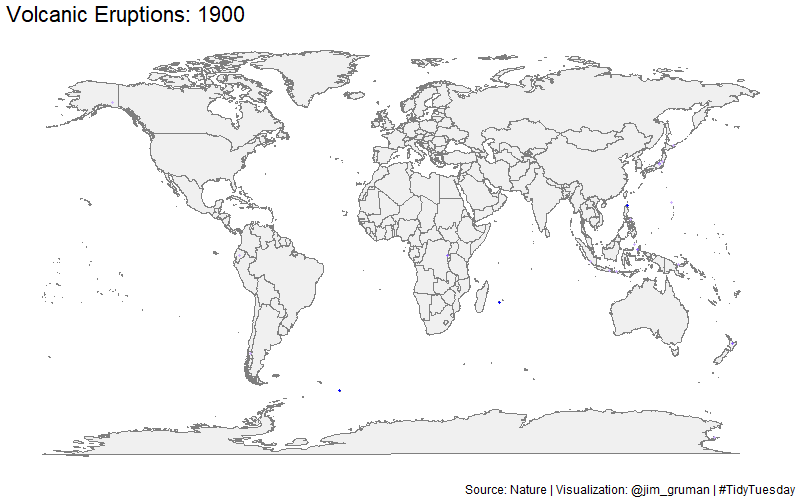

As I have written elsewhere, the R4DS TidyTuesday project offers opportunities each week to craft and learn from masters in data visualization. In the SARS-COVID19 era, geospatial dataviz is particularly critical as communities sort out what level of threat they are facing, and how best to respond.
Without investing a lot of time, this post is simply a demonstration of three approaches for generating maps, using a dataset of historic volcanic activity.
ggthemes
leaflet
Figure 1: Leaflet
gganimate
